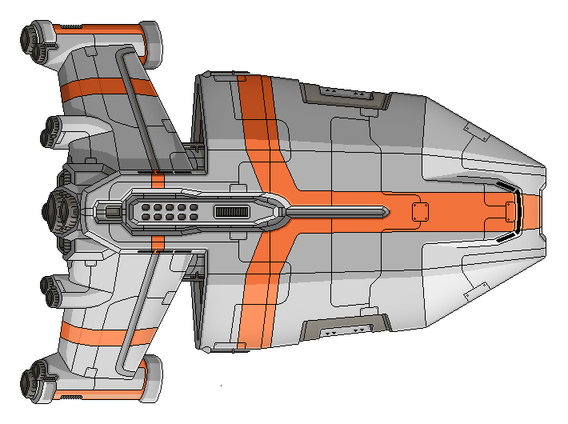
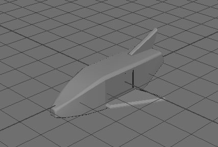

Human-Computer Interaction · Interactive Media
Designing better ways
to interact.
I'm Connor, a graduate student pursuing a master's in Human-Computer Interaction. My work explores the space where technology, design, and human behavior meet.
01 — About
Curious about
people + technology.
I earned a Bachelor of Arts in Immersive Media Design at the University of Maryland, College Park. My work spans more than five years, from personal 2D artwork and digital design to 3D models and physical installations.
I'm currently pursuing a master's degree in Human-Computer Interaction, expanding that interest into user research, interaction design, and the study of how people use technology in real-world situations.
I enjoy working across disciplines—from commissioned pixel art and graphic design to 3D modeling, interactive prototypes, and projection-based installations—and turning ideas into experiences that make sense to the people using them.
02 — Selected work
Things I've been
working on.
A selection of HCI research, web design, game concepts, and immersive-media work.

Digital Art & Design
Digital artwork, commissioned pixel art, graphic design, and animation from personal projects and coursework.

3D Models
Modeling, animation, and real-time scene work using Maya, Unity, and Unreal.

Interactive Media
Unity capstone development, VR interaction experiments, and game prototypes.

Physical Installations
Projection-based work exploring place, memory, environmental change, and physical space.
03 — Skills
A multidisciplinary
toolkit.
I work across research, design, and front-end development, with a particular interest in interactive and immersive experiences.
I want to understand how people interact with technology, then use that understanding to make those interactions better.
04 — Contact
Let's make something
interesting.
I'm interested in HCI, UX research, interaction design, immersive media, and opportunities to create thoughtful digital experiences.
connorvu@gmail.com ↗